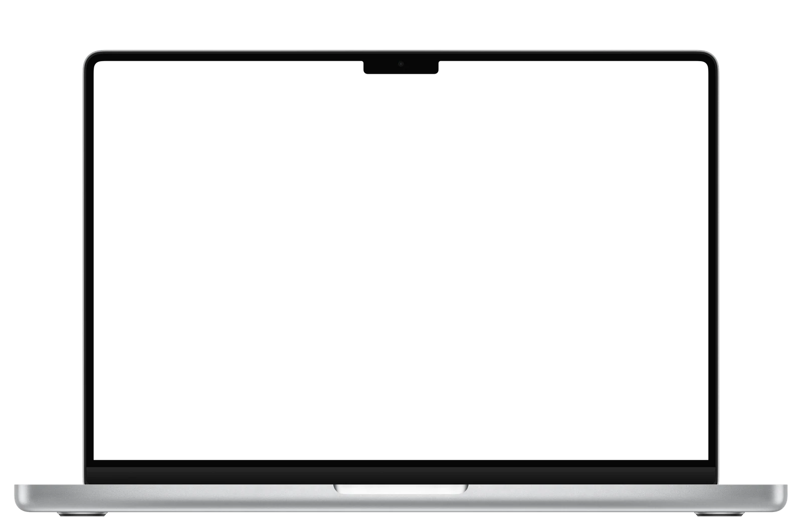

As ferramentas que você abre todo dia para entregar sites.
Descubra tudo sobre um domínio em segundos, acompanhe a propagação do DNS e deixe as imagens do site leves, com favicon e código prontos para colar.

Demonstração com dados ilustrativos.
- 11 servidores DNS checados no mundo
- 4 formatos de imagem, incluindo AVIF
- 0 arquivos enviados para servidor
- R$ 0 para usar, sem cadastro
- 910 extensões com preço
- Sem limite de uso
- HEIC do iPhone aceito
- Funciona no celular
Quatro ferramentas completas, sem aba de propaganda e sem “crie sua conta”.
raio-x de domínio
WHOIS · DNS · e-mail · propagaçãoDigite um domínio e veja onde ele está registrado, quando vence, onde está hospedado e quem cuida do e-mail.
- Registrador, idade e vencimento
- SPF, DMARC e DKIM checados
- Propagação em 11 servidores
- Exporta a zona DNS
Conversor de imagens
WebP · AVIF · favicon · kit responsivoSolte as fotos do cliente (até HEIC do iPhone) e saia com imagens leves e o código pronto para o site.
- WebP, AVIF, JPG e PNG otimizado
- Kit responsivo com <picture>
- Favicon completo em 1 clique
- Marca d'água em lote
Domínio livre?
Disponibilidade · preço · renovaçãoDigite um nome e veja em quais extensões ele está livre, quanto custa registrar e quanto custa manter por ano.
- .com.br, .com, .dev, .io e mais, de uma vez
- Preço de registro e renovação em reais
- Avisa quando a renovação é bem mais cara
- Sugere variações livres do nome
Editor de vídeo
Timeline · cortar · juntar · MP4Junte vídeos, fotos e música numa timeline, corte o que sobra e exporte em MP4. Tudo no navegador, sem instalar nada.
- Timeline com trilha de vídeo e de áudio
- Corte pelas bordas ou divida com a tecla S
- Formatos 16:9, 9:16 (Reels), 1:1 e 4:5
- Exporta em HD ou Full HD
Feito para as situações que aparecem toda semana.
Os arquivos do seu cliente nunca saem do seu computador.
Tudo roda no seu navegador. Não existe servidor recebendo imagens, não existe conta e não existe histórico guardado em lugar nenhum além do seu próprio navegador.
- Sem uploadAs imagens são processadas na sua máquina.
- Localização removidaO GPS das fotos não vai junto nos arquivos convertidos.
- Sem cadastroAbre e usa. Nenhum e-mail pedido.
Antes de você perguntar.
É grátis mesmo?
Sim. As ferramentas rodam no seu navegador, então não há servidor para pagar por imagem convertida ou domínio consultado. Não há limite de uso.
Minhas imagens vão para algum servidor?
Não. A conversão acontece no seu computador. A página só baixa os programas de conversão (como o codificador de AVIF) na primeira vez que você precisa deles.
De onde vêm os dados do domínio?
Do RDAP, o sucessor oficial do WHOIS, consultado direto nos registros de cada extensão (como o Registro.br), e de servidores DNS públicos como Google e Cloudflare.
WebP ou AVIF: qual escolher?
WebP é leve e abre em todo navegador atual, uma escolha segura para qualquer site. AVIF costuma ficar ainda menor, mas leva mais tempo para gerar. No kit responsivo você usa os dois: quem suporta AVIF recebe AVIF, os outros recebem WebP.
Funciona com foto de iPhone (HEIC)?
Sim. O conversor lê HEIC e transforma no formato que você escolher, já sem a localização GPS da foto.
O editor de vídeo envia meus vídeos para algum lugar?
Não. Os vídeos ficam no seu computador: o editor monta e grava o resultado no próprio navegador. A exportação acontece em tempo real, então um vídeo de 1 minuto leva cerca de 1 minuto para ficar pronto. Sai em MP4 no Chrome e no Edge; em navegadores sem MP4, sai em WebM.
Funciona no celular?
Funciona. As páginas foram feitas para telas pequenas, com os botões principais sempre ao alcance do dedo.
Comece pelo que você precisa agora.
Sem instalar, sem cadastro e sem esperar.